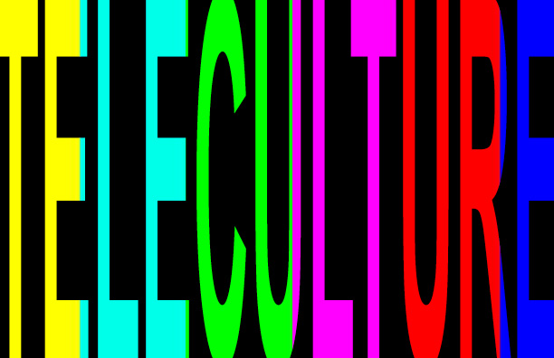
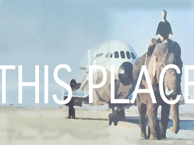
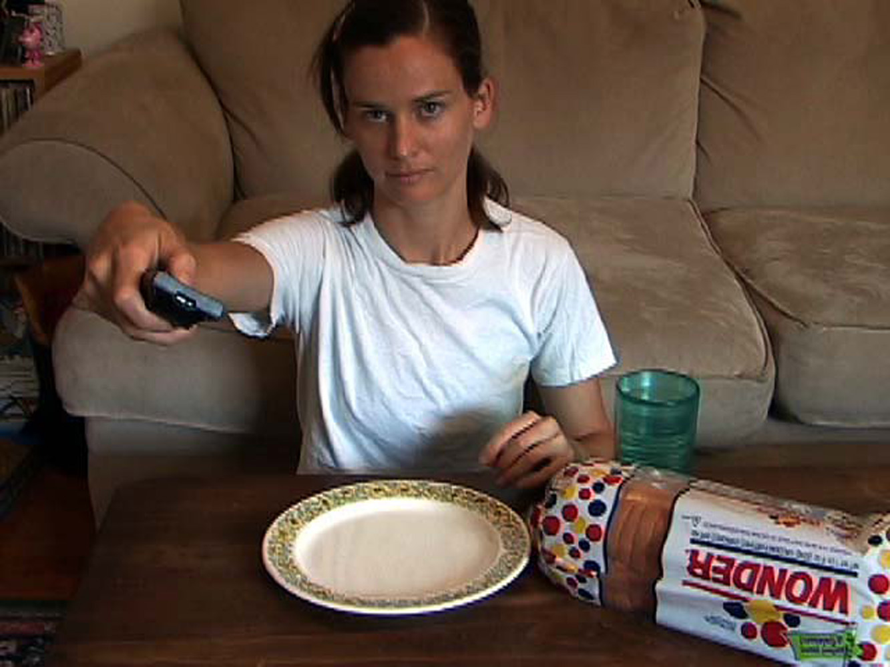
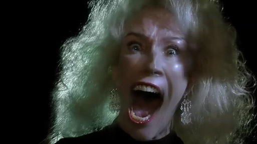
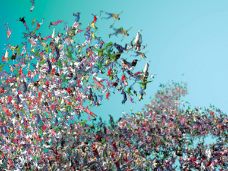
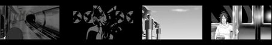
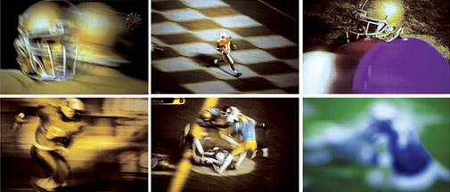
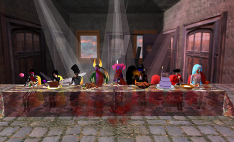
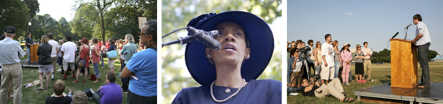
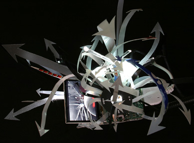

TELECULTURE
November 13- December 14, 2007

Artwork by Chris Borkowski, Bethany Fancher, Gerald Förster, Taras Hrabowsky, Jennifer Jacobs, Eric Payson, Second Front, Mark Tribe, and [dNASAb]
Curated by Lee Wells
Artists Talk - Tuesday November 13, 3-5pm
Opening Reception - Tuesday November 12, 5-7pm
------------
“Nothing – including ourselves – can be defined intrinsically; we are all in some sense extrinsic and relational achievements, conflations of body, culture, environment, technology. Moreover, the predominance of televisual and imaging technologies in contemporary technoculture has meant that our visual tools become inseparable from what we might discern as our own perceptual and bodily boundaries as ‘access’ to the world.”
Ingrid Richardson, Telebodies & Televisions: Corporeality and Agency in Technoculture, 2003
-----------
TELECULTURE is a survey that brings together a diverse group of new media artists, whose work - ranging from photography to online virtual reality - embodies, a cross section of thought that investigates perceptions of identity in the early 21st century. Information and images, now heavily filtered through advanced technology, the internet, and mass media, have also granted new empirical freedoms to the artist to re-contextualize the spectacle of contemporary life. This allows them to address this spectacle on their terms through these new tools and rapid means of communication.
The artworks all possess a strongly imbued socio-political agenda that oscillates between reality and simulation (hyperreality), creating a hybrid narrative that attempts to translate an understanding of the present in order to make sense of an uncertain future.
Pace Digital Gallery offers a unique and challenging public environment, where as, through the sheer verticality of the space, the selected artworks combine to visually communicate a sense of claustrophobic post-millennial anxiety mixed with an undefinable euphoria, liberation, and freedom.
------------
Chris Borkowski
www.chrisborkowski.com

Codex, 2007
HD & SD video/ Jitter/ mac mini/ 24” Flat Screen
“Codex is a clearing house of video clips, audio sound bytes and textual pieces created but never finished since I moved to NYC in 2003. Through the use of a semi-random algorithm the narrative body flows through sorted sets and grouping of ideas, images and sounds that deal with fictional and non-fictional mini-narratives. The mini-narratives range from subjects concerning geography, technology, capitalism, socialism, political history, spiritualism, the occult, multiplicity, and direct observations of urban life on both broad and micro levels. “It’s a movie that is never complete, never ending and never the same twice. It’s about me, you and everything around us past present and future. Call it artful dodging by computational power, call it laziness, call it a hopeless but beautiful mess because who has time to sort out interrelated ideas, who has time for anything longer than 30 seconds? I don’t, but the codex or rather algorithm does and can neatly sort it all out for us.”
Chris Borkowski is a media maker from Buffalo, NY who is now living and working in New York City. He has worked professionally as video editor, network administrator, media arts center Technical Director, and University instructor in digital arts. He has shown work internationally at various galleries and media festivals and has also performed a number of real-time audio and video pieces. He likes sunsets and long walks in the park, the shape of pixels, social climbers, hackers, misfits and charlatans. His favorite colors are RGB and he finds name dropping and writing his own bio the biggest turn off.
------------
Bethany Fancher
www.bethanyjean.com

Construction and Deconstruction of the 43rd President, 2006
SD Video
Fancher questions her place and responsibility in relationship to America through her performance-based video installation, Construction and Deconstruction of the 43rd President. Her examination tool is Wonder Bread - the prototypical American industrially produced food product, as a symbolic gesture of her disgust at how we are marketed information devoid of any real substance.
Bethany Fancher currently lives and works in Queens, New York. Connection to the animal world combined with alienation from humankind in general with all its oppression, repression, and depression runs thematically through her work in video, performance, sculpture, photography, and painting. She attended the I-Park residency in East Haddam, Connecticut in 2001, the Jentel residency in Banner, Wyoming in 2004, the McColl Center for Visual Arts residency in Charlotte, North Carolina in 2005 and exhibits her work nationally and internationally.
------------
Gerald Förster
www.geraldforster.com

Toddesschrei (Yvette), 2007
HD Video
Toddesschrei, Förster’s latest video project, is a dark glimpse into the primal horror of modern existence. It is an expression of the inner anguish, fear, terror and grief that so many human beings experience. Resulting from spiritual isolation, physical obsolescence and socio-political impotence. The world is ironically bent on the denial of suffering, the denial of death and the obsessive veneration of power, wealth, youth and physical beauty.
Gerald Förster, winner of the “Fuji Press International Professional photographer Award 2006” was born in Germany in 1964. He graduated from his academic studies of photography in 1985 and has since worked professionally in Europe and the United States. He has contributed images to various publications throughout the world including Vogue, Premier, Esquire, and The New York Times Magazine among many others. Förster makes his home in New York City.
-----------
Taras Hrabowsky
www.tarashrabowsky.com

Amalgamide Tide, 2006
HD Video
Hrabowski’s projection is a conceptual blend of Niagara Falls, Tsunami waves, cloud systems, and tornadoes - consisting of thousands of digitally animated people. Amalgamide Tide questions the relationship between group consciousness and uncontrollable effects and consequences in nature. “We manufacture our own catastrophes for our euphoric entertainment.”
Hrabowski, born in 1981 in Middletown, New York, received his BFA from Pratt Institute in 2002. His work explores a combination of mediums, including painting, installation, and projection environments that are displayed both publicly and privately. During the summer of 2007 Hrabowski showed Amalgamide Tide in 14 cities, projecting video in public from a specially modified van. He exhibited his work at Sensei Gallery and Artist Network in New York City and MCV/NYC in Brooklyn. He currently lives and works in Brooklyn, New York.
----------
Jennifer Jacobs
www.jenniferj.net

Sister City, 2007
4 channel digital animation
Sister City defines an individual’s identity and internal evolution using a pair of narratives as a reference point. The narratives are set in two different worlds located in opposing universes. Both worlds contain two cities and a pair of sisters. These separate worlds are different representations of the same mind, parallel to the conscious and unconscious realms of the human brain. The cities symbolize two divergent personas within this mind and the sisters serve as vectors of interaction between them. This structure reveals a continuous process of mental division and conflict, representative of the psychological evolution that occurs throughout a lifetime.
Jennifer Jacobs is an emerging artist from Corvallis, Oregon and a recent graduate of the University of Oregon. Her work addresses the personal metamorphosis that results from our identification and daily interaction with the mechanical. Her pieces range from live productions to animation with interactive elements. She currently works and resides in New York City.
-----------
Eric Payson
www.ericpayson.com

Ghostplay, 2007
Photo Duraclear installation
In Payson’s electrifying new work Ghostplay, college football’s raw beauty rises to the surface in photographs taken directly from the television screen; images morph into each other and expressions are magnified as they are frozen in time. Ghostplay examines the media that transmits it all, as the broadcasters and corporate sponsors appear as much a part of the game as the athletes and coaches. Interspersed with intrusive news bulletins, overeager cheerleaders, anxious spectators, and seemingly malicious data on the athletes’ injuries, college football appears to be a forum for adolescent violence and pervasive adult greed. In these images, the game dissolves as the ghost in the machine of the American media is captured by Payson’s camera. Ghostplay reveals the suspicion and intrigue lurking between the stadium seats, played out in the television control rooms, and hovering in the lower levels of our consciousness.
Eric Payson is a photographer and performance artist. Solo exhibitions of his photographs have been mounted at Galerie Bodo Niemann, Berlin and Rene Fotouhi, East Hampton, New York. Payson lives and works in New York and Tucson, Arizona.
-----------
Second Front
www.slfront.blogspot.com

The Last Supper, 2007
Online VR performace and video
Second Front creates theatres of the absurd that challenge notions of virtual embodiment, online performance and the formation of virtual narrative. Taking their influences from numerous sources, including Dada, Fluxus, Futurist Syntesi, the Situationist International and contemporary performance artists like Laurie Anderson and Guillermo Gomez-Pena.
Second Front is the pioneering performance art group in the online avatar-based VR world, Second Life. Founded in 2006, Second Front quickly grew to its current 8 member troupe that includes Jeremy Owen Turner (Vancouver), Doug Jarvis (Victoria), Tanya Skuce (Vancouver), Gazira Babeli (Italy), Penny Leong Browne (Vancouver), Patrick Lichty (Chicago), Liz Solo (St. Johns) and Scott Kildall (San Francisco). Second Front has performed extensively, including Vancouver, Chicago, New York, and has been featured in publications including SLate, Eikon, Realtime Arts (Australia), The Avastar (published by Axel-Springer, Germany) and most recently in Exibart a(Italy).
-----------
Mark Tribe
www.nothing.org

The Port Huron Project, 2007
Digital Video
The Port Huron Project is a series of reenactments of protest speeches from the 1960s and ‘70s. Each event takes place at the site of the original speech, and is delivered by an actor to an audience of invited guests and passers-by. Videos of these performances are presented in various venues and distributed online (on YouTube, Blip.tv, and MySpace) and on DVD as open-source media (so others can view them, share them, or use them as found footage in other projects). The videos included in this exhibition document reenactments, staged in 2006 and 2007, of speeches originally given by Coretta Scott King (Central Park, 1968), author/activist Howard Zinn (Boston Common, 1971) and SDS President Paul Potter (National Mall, 1965).
Mark Tribe is an artist and curator whose interests include art, technology, and politics. His art work has been exhibited at the ZKM Center for Art and Media in Karlsruhe, the Ars Electronica Festival in Linz, and Gigantic Art Space in New York City. He has organized curatorial projects for the New Museum of Contemporary Art, MASS MoCA, and inSite_05. In 1996, he founded Rhizome.org, an online resource for new media artists. He teaches at Brown University, and is the co-author, with Reena Jana, of New Media Art (Taschen, 2006). He splits his time between Providence and New York City.
---------
[dNASAb]
www.tc43.com

data ECOsystems .HybridEnertainmentMatrix, 2007
multi channel iPod video sculpture
[dNASAb]’s data ECOsystems explore the possible aesthetics of wireless data and critique the fetishization of technology through photography, drawing, painting, and assemblage sculpture. Informed by the integration of art installation, sound, and technology, [dNASAb]’s work is richly intricate and visually stunning, each piece suggesting a “visual network” formed from explosions of mass communication graffiti.
[dNASAb] received a BFA in Sculpture and in Mixed Media from Florida State University in 1994. He was selected by Cindy Sherman, Jack Pierson, and Adam Fuss for Unframed First Look 2004, a juried salon for emerging artists at the Sean Kelly Gallery in New York. In March 2005, the artist was a winner in The Los Angeles Center For Digital Art’s international competition for photography and digital artists. He has exhibited and has collaborated extensively in new media art installations, interactive multimedia projects, and art performances in New York and internationally since 1997. The artist lives and works in Brooklyn, New York.
----------
About the curator
Lee Wells is an artist, exhibition organizer and consultant currently living and working New York. Curating since 1996, his projects have recently been included in the 2nd Moscow Biennale, Chelsea Art Museum and Art Basel Miami Beach 2006. He is co-founder of [PAM] the Perpetual Art Machine (www.perpetualartmachine.com) an online community video art portal and traveling interactive installation founded in January 2006.
As an artist his work, which addresses systems of power and control, has been presented in a number of solo and group exhibitions including the 51 st La Biennale Di Venezia, Contemporary Arts Center in Cincinatti, the Museo d’arte Moderna e Contemporanea di Trento e Rovereto (MART) and the PS1 Contemporary Art Center in Long Island City. His projects and exhibitions have been written about by various national and international art and news publications to include: The New York Times, Art Newspaper, The Washington Post, Art in America, and Art Net.
Wells most recently was invited to curate an international program for “In Transition Russia 2008” a project in collaboration with the National Centres of Contemporary Art (NCCA), Yekaterinburg and Moscow, The Academy of Contemporary Art, The Ural State Gorky University (USU), Yekaterinburg and the Independent Museum of Contemporary Art (IMCA) in Limassol, Cyprus.
www.leewells.org
www.ifac-arts.org
www.perpetualartmachine.com
-----------
Directors Statement
In 2007 I invited Lee Wells, New York-based champion of emerging video artists, to curate a video art exhibition at Pace Digital Gallery. Wells brings his far-reaching experience and contacts with video artists in New York and abroad to this outstanding exhibition. Wells has previously curated video art selections at such prestigious events as The Moscow Biennale of Contemporary Art, which I had the good fortune to visit in Winter 2007. The Perpetual Art Machine or [PAM] - an online global community which collects, sorts, and displays short video works submitted by artists - is Wells’ project which he co-founded along with the artists Chris Borkowski, Arron Miller and Raphaele Shirley. At its web address (www.perpetualartmachine.com), PAM is open to the public for viewing at any time, but it has also been configured as a more literal touch-screen multiple display machine that allows audiences in physical space to select works for viewing based on a number of criteria.
Since [PAM]’s founding in 2006 the installation and special screenings have traveled to 10 countries and exhibited in renowned museums like The Chelsea Art Museum in New York and the Lentos Kunstmsueum in Linz, Austria; international festivals such as Split Film Festival in Croatia and WRO07 in Warsaw, Poland; and numerous art fairs including ART | BASEL in Miami, Florida.
Although in its acceptance policy PAM makes no discrimination between artworks of greater or lesser notoreity, it is the job of the curator to hand-pick a thematic or cohesive few for external exhibitions. “Teleculture” is Wells’ latest curatorial selection from this growing database, and Pace Digital Gallery is pleased to present it.
Outside of his curatorial projects, Wells is himself an artist who has exhibited his work internationally to critical acclaim.
Jillian Mcdonald
|